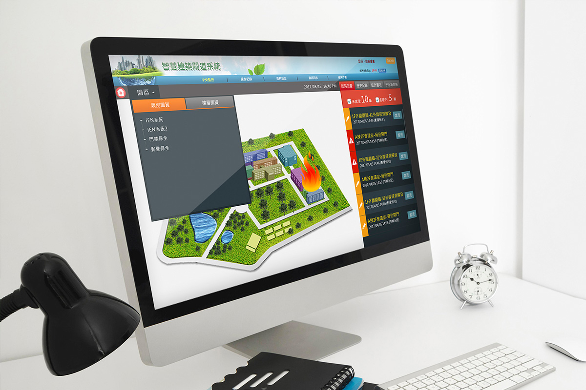
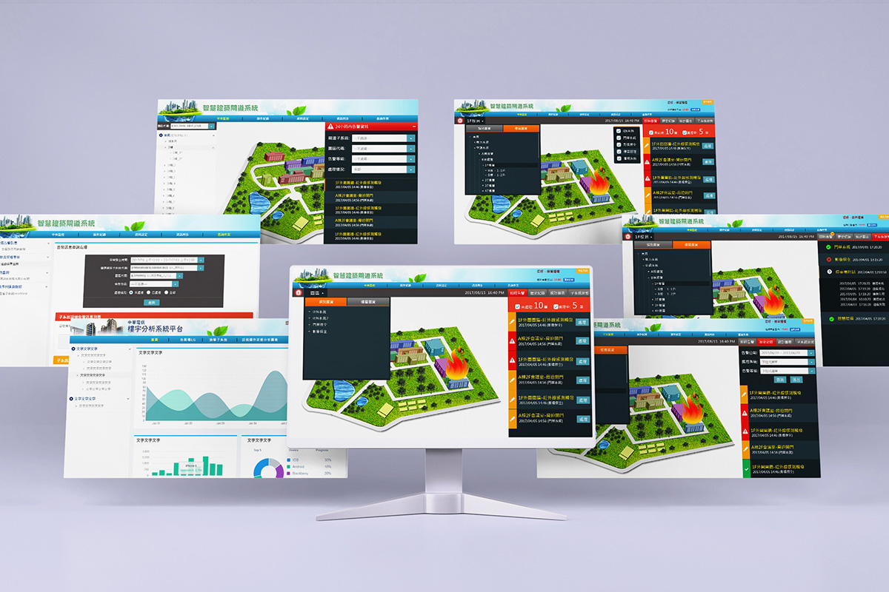

智慧建築與物管系統
- Category: UI design
- Client:
- Project date: 2018
這是一個讓社區保全人員使用桌上電腦操作的系統,因為使用者可能年齡層偏高,所以整個設計的走向是以包容性設計的原則來考量,包容性設計是由微軟的研究人員,經由系統性的分析和研究做出的文件,我參考了這部份的設計原則來作物管系統的設計.
因為畫面資料很多資訊必須清楚分類,保全才能快速處理緊急事件,所以使用醒目或較大面積的按鈕（費茲法則 Fitt’s Law）更容易被準確地被觸碰,這也是我設計的方向和理念.
社區發生火災或是瓦斯外洩,保全可以直接從地圖上看到事發地點,右方選單可以看到紅色的即時告警,直接聯絡屋主確認是否有人在家,瓦斯漏氣的話可以先將瓦斯關閉,選單的下方會有處理歷程,處理完成之後狀態就會顯示為綠色,右方選單也會因應事件的緊急輕重來排序